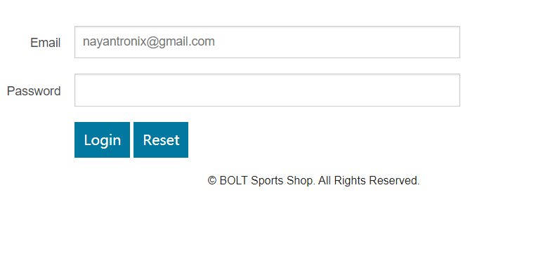
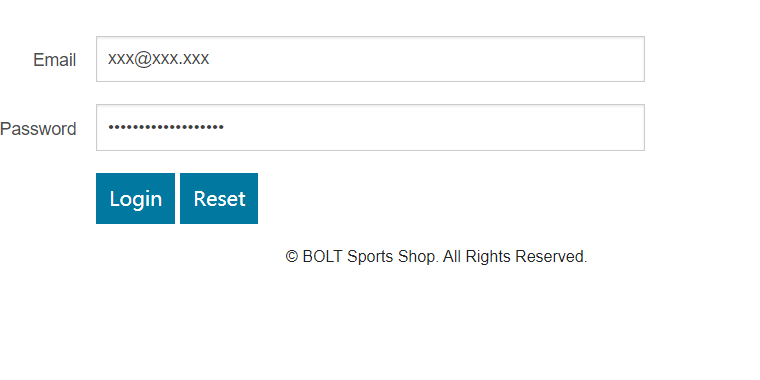
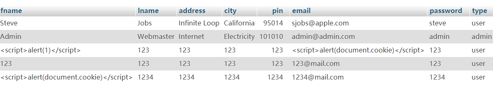
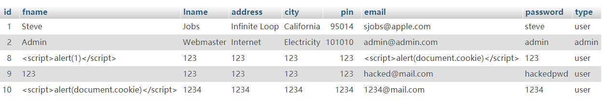

XSS attack
Cross-site scripting (XSS) is a vulnerability that permits an attacker to inject code (typically HTML or JavaScript) into contents of a website not under the attacker's control. When a victim views such a page, the injected code executes in the victim's browser. Thus, the attacker has bypassed the browser's same origin policy and can steal victim's private information associated with the website in question.
Attack procedure
We are trying to registrate a new account that storage some javascript code withtin the name. Then each time we login using that account, we could excute the that code and obtain some important information.
We registrate a account with name containing a special line of javascript codes:
script alert(document.cookie) script

Once we loged in, we could go to 'my account'. Then there would be a window jump out writing about cookie.

Possible solutions
1.Filter the user inputs. We should make certian white list or black list on user inputs to prevent harmful codes.
2.Encrypt the stored information. With the information being encrypted, some harmful codes can no longer be rcognized and, consequently, will not be excuted through HTTP request.
SQL injection
Attack implemtation
The following attack takes advantage of non-defensed SQL request. The basic idea is to make SQL database excute the code that always return true through taking special inputs within login function.
The login in function of ecommerce website has vulnerabilities to SQL injection. To perform SQL injection attack, We need to inspect carefully on what happened to SQL queries, which is accomplished in queries.php
$result = $mysqli->query("SELECT * FROM users WHERE email = '$username' AND password = '$password' ");
The two variables "$username" and "$password" are requested from the SQL database, according to above code description.
Two steps to attack:
1.Input xxx@xxx.xxx for email
2.Input xxx' OR 1 = 1 -- ] for password
Then attacker would log in without knowing any exact password and email address.
Possible solution
1.Never trust the user inputs. We should make some black lists on the user inputs.
2. Regular expressions. Regular expressions can detect potential harmful code and remove it before executing the SQL statements.
Authentication and session manipulation
Authentication and session manipulation is the exploitation of a valid computer session to gain unauthorized access to information or services in a computer system.
For example, in this website, when people sign in, they will be assigned with a cookie. However, one possible vulnerability is that people may use the same cookie iteratively. If some one have that cookie, the states of that users would be invaded, which could causes damage to their privacy and security.
Attack implemtation
For each time we start a PHP sebsite, a cookie ID will be assigned to user. For example, remeber from the
XSS attack, we obtain the cookie ID
username=1234%40mail.com

Then, with this cookie, users could jump into the other accounts by simply revising the cookie to this one.
Possible solutions
1.Give randomnized cookies each time. With randomnized cookies, simply switching cookies could no longer enter other's session.
2.Use the HTTPS to encrypt all sessions. With the session transmisstion encrypted, information get by attacker can no longer be inteprated.
Path traversal
A path traversal attack allows attackers to access directories that they should not be accessing, like config files or any other files/directories that may contains server’s data not intended for public.
In example of ecommerce, we could observe that there is a button on the page of products. When we click on that, there is nothing happened. Actually, thouse are considered as secrets of different products, which should not be shown to custmors. Then, how could we access that information in other ways?
We could find some clues from the source code! If we inspect carefully of page of products, we could observer from line 32 to line 55 that there is a directary called product-description. If we access to that directary through manually typing in. we could access to the information.
We load to the following directary, a description to different products, and we get a fllowing http request:
http://localhost/ecom/display_image.php?product=product-description%2FCap.php
We notice that this request could access some files. In this case, we want to access passwords of Xampp admin, which is storaged in
a txt file called "passwords.txt", which is in the parent directory of our website document.
Therefore, we switch the http request as floowing.
http://localhost/ecom/display_image.php?product=../../passwords.txt
We could observe from the following images that the admin actually don't have any password!


XSRF
Attack implemtation
The following XSRF takes advantage of the possibility of changing email and password that the website allows. The attack consist on a change of email and password for those desired by the attacker. The victim will be lead to this link "website" by something like an email sent to their personal email account or by phishing them through another website.
In this senario, suppose custmors received an email with title "CHEAP CARS!" and clicked in that. They would be directed to a new website.

However, this website is not simple and harmless as it seems like. It contains some dangerous codes.

According to the line, this page has a function of receving input of consumers, though invisible.
Once consumers start to login their account in the Ecommerce website, the user and password would all be changed, and
not retrivable anymore.


We could observe that the second last user's password and email are all changed.